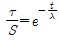
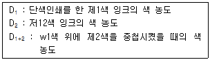
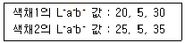
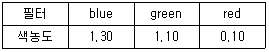
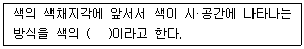

인쇄기사 (2010-05-09 기출문제)
1과목: 인쇄공학
1. 다음 중 뒤묻음 현상이 일어나는 원인으로 가장 거리가 먼 것은?
- 종이의 흡유도가 나쁠 때
- 종이에 가장자리 주름(tight edge)이 있을 때
- 종이에 광택이 없을 때
- 종이에 정전기가 일어날 때
(정답률: 알수없음)

2. WF(Walker-Fetsko)의 전이 방정식에 적용되는 3가지 개념(concept) 에 해당되지 않는 것은?
- 판에 남은 잉크량(x값)
- 자유잉크의 분열(f값)
- 고정잉크의 개념(b값)
- 용지의 피복면적비(K값)
(정답률: 알수없음)
3. 주간지에 주로 사용되는 제책 방식으로 속장에 표지를 대고 펼쳐놓은 다음 가운데를 실이나 철사로 매고,가운데를 접어 표지와 함께 다듬 재단을 하는 제책 방식은?
- 양장
- 중철
- 호부장
- 무선절
(정답률: 알수없음)
4. 절대습도 계산에 필요한 변수와 가장 거리가 먼 것은?
- 공기의 온도
- 총압력
- 증기의 분압
- 물의 분자량
(정답률: 알수없음)
5. 표면가공 후 수분함량이 많거나 평활도가 낮은 용지, 밀도가 낮고 흡수율이 높은 용지, 결이 있는 레자크지나 엠보싱지를 표지로 사용했을 때 자주 발생하는 문제점은?
- 기포 발생
- 에지부 박리
- 주름 발생
- 용지 수축
(정답률: 알수없음)
6. 단색 민짜 인쇄에서 잉크의 피복면적비와 비례관계에 있는 것은?
- 종이의 표면 거철기
- 피복 저항
- 인쇄 속도
- 인쇄 압력
(정답률: 알수없음)
7. 스트레스와 변형의 관계 그래프에서 비례상수가 변형의 크기에 불구하고 항상 일정한 유동은?
- 뉴톤성(newtonian)유동
- 딜라던트(DiIatant)유동
- 소성(PIastic)유동
- 의소성(PseudopIastic)유동
(정답률: 알수없음)
8. 인쇄용지에 인쇄를 할 때 잉크전이에 대한 설명으로 옳은 것은?
- 인쇄 속도가 빠를수록 전이율은 감소한다.
- 인쇄 압력이 높을 수록 전이율은 감소한다.
- 잉크의 점도가 높을수록 전이율은 증가한다.
- 고정화 잉크량과 평활도 및 흡유도는 비례한다.
(정답률: 알수없음)
9. 시간 t=O 일 때 stress를 S, (G/η)를 λ라고 할 때,

의 식이 되는 점탄성 모델은? (단,τ는 shear stress , G는 탄성율,η는 점도를 나타낸다.)- Newton 모델
- Voigt 모델
- Maxwell 모델
- Einstein 모델
(정답률: 알수없음)
10. 인쇄가 진행될수록 망점의 끝부분이나 민인쇄의 가장자리 부분의 농도가 점점 엷어져 인쇄품질이 불량해지는 파일링(piIing)현상에 대하여 잘못 설명한 것은?
- 블랭킷에 지분이 점점 쌓여 발생한다.
- 블랭킷보다 잉크롤러의 영향이 크다.
- 물에 약한 코팅층의 종이를 사용하면 발생한다.
- 분산이 불량한 잉크를 사용하면 발생한다.
(정답률: 알수없음)
11. 인라인코팅 시스템에 대한 설명으로 잘못된 것은?
- 롤 코터(roll coater)는 챔버 코터(chanber coater)방식에 비해 설치비가 저렴하다.
- 챔버 코터(chanber coater)는 롤의 회전수로 도막의 두께를 변경한다.
- 롤 코터(roll coater)는 바니시의 온도를 잘 관리해야 한다.
- 챔버 코터(chanber coater)는 금, 은, 형광바니시의 코팅이 가능하다.
(정답률: 알수없음)
12. 앙장 제책에서 책등을 꾸밀 때 등 모양에 해당되지 않는 것은?
- 흐름등(flow back)
- 붙은등(tight back)
- 휜등(flexible back)
- 뗀등(hollow back)
(정답률: 알수없음)
13. 밀도가 2g/cm2 이고 절대점도가 1.5[g/(cm*sec)]인 잉크의 동점도는 몇 스토크(stoke) 인가?
- 0.75
- 1.33
- 1.70
- 3.0
(정답률: 알수없음)
14. IGT인쇄적성 시험기로 측정하지 못하는 것은?
- 잉크 뜯김성
- 잉크의 전이율
- 잉크 트래핑
- 잉크의 택
(정답률: 알수없음)
15. 다음의 말단기 중 비화선부에 습수가 묻을 수 있도록 친수성을 나타내는 것이 아닌 것은?
- -COONa
- -COOH
- -C2H5
- -OS03Na
(정답률: 알수없음)
16. 인쇄실의 온∙습도 관리에 대한 설명으로 옳지 않은 것은?
- 잉크는 온도에 따라 점도가 변화되어 전이현상에 영향을 준다.
- 종이는 습도에 따라 신축율이 변화되어 화상맞춤에 영향을 준다.
- 공조기의 송풍방향과 바람의 세기를 조절할 때, 바람이 습수 롤러나 잉크 등에 직접 닿게 조절한다.
- 냉방과 난방 설계시 온도가 높은 공기는 상승하고 낮은 공기는 하강한다는 원리를 이용한다.
(정답률: 알수없음)
17. [조건]이 다음과 같을 때 광학적으로 Trapping 을 구하는 식을 옳게 나타낸 것은?

- D2-D1+2/D2×100(%)
- D1+2-D2/D2×1OO(%)
- D1-D1+2/D1×100(%)
- D1+2-D1/D1×100(%)
(정답률: 알수없음)
18. 프로세스 인쇄에서 그레이 밸런스(Gray Balance)에 영향을 주는 변수와 가장 거리가 먼 것은?
- 잉크의 건조상태
- 잉크의 인쇄순서
- 망점확대
- 피인쇄체의 바탕색
(정답률: 알수없음)
19. 인쇄판 위에서 축임물의 접촉각 중 가장 젖기 쉬운 경우에 해당 되는 것은?
- 15°
- 45°
- 70°
- 90°
(정답률: 알수없음)
20. 인쇄물의 망점 면적율이 65%일 때, 하프톤 값(halftone Value)은 얼마인가?
- 35%
- 65%
- 135%
- 165%
(정답률: 알수없음)
2과목: 인쇄재료학
21. 플렉소그래피(flexography) 잉크의 특징에 대한 설명으로 옳은 것은?
- 주로 오목판인쇄 방식에 활용된다.
- 수성, 알코올성, 용제성 잉크로 분류된다.
- 고점도 잉크이다.
- 대부분 톨루엔과 같은 방향족 용제가 사용된다.
(정답률: 알수없음)
22. 다음 중 잉크의 유동성 조정제가 아닌 것은?
- 계면활성제
- 매트니스
- 컴파운드
- 겔니스
(정답률: 알수없음)
23. 재생펄프 공정 중 이물질 분리 공정이라고 할 수 있으며 잉크와 섬유를 분리하는 주된 공정은?
- 해리공정
- 숙성공정
- 정선공정
- 탈묵공정
(정답률: 알수없음)
24. 도공지는 광택의 정도에 따라 분류될 수 있다. 다음 중 광택이 높은 것부터 순서대로 옳게 나열된 것은?
- 매트지 ＞ 덜(dull)지 ＞ 아트지
- 덜(dull)지 ＞ 아트지 ＞ 매트지
- 아트지 ＞ 매트지 ＞ 덜(dull)지
- 아트지 ＞ 덜(dull)지 ＞ 매트지
(정답률: 알수없음)
25. 비중 차이를 이용하여 펄프 중의 이물질이나 결속 섬유를 제거 하는 것은?
- Screen
- Purper
- C|eaner
- Refiner
(정답률: 알수없음)
26. 일반적으로 에멀션라텍스를 말하며 분자량이 10만 이상의 고분자 물질이 물에 안정하게 분산된 수지를 무엇이라 하는가?
- 수용성수지
- 수용화수지
- 수성분산수지
- 수성회합수지
(정답률: 알수없음)
27. 다음 중 인쇄기의 고무 롤러에 사용되는 재료가 아닌 것은?
- 아크릴 고무
- 우레탄 고무
- 니트릴 고무
- 부틸 고무
(정답률: 알수없음)
28. 로진×중합로진을 글리세린 EH는 펜타에 리스리톨과 230~260℃에서 반응시켜 산가를 15 이하로 만든 수지는?
- 페놀 수지
- 로진 에스테르
- 말레산 수지
- 경화 로진
(정답률: 알수없음)
29. 제지공정에서 종이에 잉크 또는 물의 침투저항성을 부여하는 공정은?
- 비팅
- 사이징
- 전충
- 착색
(정답률: 알수없음)
30. 물속에서 섬유를 기계적으로 처리하여 초지하기에 적당하도록 만들어 주는 공정은?
- 사이징
- 충전
- 고해
- 정선
(정답률: 알수없음)
31. 화학적인 처리에 의하여 제조되는 화학펄프에 해당하는 것은?
- 쇄목펄프
- 리파이너 펄프
- 크라프트 펄프
- 열기계 펄프
(정답률: 알수없음)
32. 도공용 바인더로 라텍스를 사용할 때의 장점이 아닌 것은?
- 도공안료의 접착력이 크다.
- 내수성이 우수하다.
- 인쇄 후 광택이 양호하다.
- 스티프니스가 높다.
(정답률: 알수없음)
33. 무색의 상태에 있는 재료에 빛, 열, 전자선의 자극을 주면 발색하여 거기에 따른 자극을 작용시키면 소색하는 재료는?
- 자기재료
- 가역성재료
- 은염재료
- 레이저 감응재료
(정답률: 알수없음)
34. 화상기록재료 중 비은염 감광성재료의 화학적 재료에 속하지 않는 것은?
- 잉크셋 인쇄
- 토포폴리머
- 유리기 사진
- 중크롬산 콜로이드
(정답률: 알수없음)
35. 다음 중 축임물에 사용하는 재료가 아닌 것은?
- 친수성 고분자물
- 산류
- 교질재료
- 계면활성제
(정답률: 알수없음)
36. 인쇄잉크의 조성에서 색료를 분산시켜 고착시켜주는 역할을 하는 것은?
- 안료
- 비이클
- 첨가제
- 계면활성제
(정답률: 알수없음)
37. 잉크의 색재 중에서 체질 안료로 사용되는 것은?
- 카본블랙
- 티탄백
- 탄산칼슘
- 황연
(정답률: 알수없음)
38. 스크린 인쇄에 사용하는 잉크의 적성에 대하여 가장 옳게 설명한 것은?
- 잉크의 유동성이 크고, 늘기가 짧으며, 점도가 낮아야 한다.
- 잉크의 유동성이 크고, 늘기가 비교적 길며, 점도가 높아야 한다.
- 잉크층이 두꺼우므로 점도가 낮고, 유동성이 크며, 늘기가 길어야 한다.
- 잉크가 망사를 통과해야 하므로 점도가 높고, 유동성이 작으며, 수성잉크이어야 한다.
(정답률: 알수없음)
39. 오프셋 윤전인쇄에서 인쇄 직후의 고온에서 잉크 건조시 종이 속의 수분이 급격하게 수증기로 변하면서 팽창되어 지층을 파괴하는 현상을 무엇이라 하는가?
- mottling
- speckling
- picking
- blister
(정답률: 알수없음)
40. 비휘발성의 용제 성분으로 비닐계 수지나 니트로셀룰로오스 등을 서로 녹여서 건조피막에 유연성을 주어 갈라지거나 부서짐을 방지하는 역할을 하는 것은?
- 기름
- 수지
- 왁스
- 가소제
(정답률: 알수없음)
3과목: 특수인쇄학
41. PCB인쇄용 지지체 재료 중 유기절연물에 속하지 않는 것은?
- 종이 폐놀
- 세라믹
- 종이 에폭시
- 유리섬유
(정답률: 알수없음)
42. T-셔츠류 다색 인쇄를 할 때 주로 사용하는 스크린 인쇄기계는?
- 반자동 평면 인쇄기
- 반자동 곡면 인쇄기
- 회전 다색 스크린 인쇄기
- 수동 곡면 스크린 인쇄기
(정답률: 알수없음)
43. 인쇄를 하기 위한 공정 중에 솔더 레지스트 인쇄가 필요한 방식은?
- 홀로그램 인쇄
- 입체 인쇄
- 비즈니스폼 인쇄
- PCB 인쇄
(정답률: 알수없음)
44. 그라비어 인쇄기의 잉크 공급 방식이 아닌 것은?
- 침적형
- 사출형
- 롤러 전이형
- 분사형
(정답률: 알수없음)
45. 액정의 캡슐화 및 잉크화의 장점이 아닌 것은?
- 직사광선과 마찰력이 강해진다.
- 접착력이 증대된다.
- 액정의 수명이 길어진다.
- 인쇄적성이 좋으며, 여러 가지 무늬의 인쇄가 가능하다.
(정답률: 알수없음)
46. 패드 인쇄에 대한 설명으로 잘못된 것은?
- 평면 형태의 패드는 판과 접촉시 공기층이 형성되어 잉크의 묻힘을 방해한다.
- 화상의 크기에 따K라 패드 크기도 고려하여야 한다.
- 패드가 클수록 화상의 일그러짐 현상이 감소한다.
- 판과 인쇄기계 몸체 사이의 간격이 사용할 수 있는 패드의 최소 크기가 된다.
(정답률: 알수없음)
47. 입체 인쇄에 있어서 입체표시 기술방법 중 두 방향 화상형성 방법이 아닌 것은?
- 시차 변화법
- 시간 분할법
- 편광 필터법
- 2색 필터법
(정답률: 알수없음)
48. 두꺼운 종이에 그라비어 인쇄할 때 필요한 압통 고무의 경도(HS) 는?
- 15 ~ 25
- 35 ~ 45
- 55 ~ 65
- 85 ~ 90
(정답률: 알수없음)
49. 스크린 감광제 중 디아조 계통 감광재료의 최대 파장 영역은?
- 120nm
- 250nm
- 400nm
- 650nm
(정답률: 알수없음)
50. 지기인쇄에서 지기를 제조상으로 구분 할 때, 조립형 상자에 해당하는 것은?
- 스트레이트 카턴 상자
- 하부 접착형 상자
- 로크식 상자
- 서랍식 상자
(정답률: 알수없음)
51. 스크린 인쇄에서 실의 굵기가 동일할 때 잉크전이량이 가장 많은 스크린선수는?
- 100메시
- 200메시
- 270메시
- 300메시
(정답률: 알수없음)
52. 인쇄할 원고의 디지털 데이터를 전기신호로 변화시켜 다이아몬드 칩으로 조각하여 제판하는 방식과 관계있는 것은?
- 식판기
- 덜젠 그라비어
- 컨벤셔널 그라비어
- 헬리오클리쇼 그래프
(정답률: 알수없음)
53. 분자배열 방법에 따른 액정의 종류에 속하지 않는 것은?
- 콜레스테릭 액정
- 네마틱 액정
- 에디티브 액정
- 스메틱 액정
(정답률: 알수없음)
54. 스크린 제판법 중 직접법에 사용되는 감광액의 선택시 고려해야 할 사항으로 틀린 것은?
- 감광막의 보전성이 좋을 것
- 감도가 우수할 것
- 스크린 망사와의 접착성이 좋을 것
- 장시간 노출이 필요한 것
(정답률: 알수없음)
55. VFD(vacuum fluorescent display) 의 장점이 아닌 것은?
- 표시 휘도가 높다.
- 소비 전력이 적다.
- 시야 각도가 높다.
- 동작온도 범위가 실온에서만 가능하다.
(정답률: 알수없음)
56. 다음 중 인라인형 플렉소 인쇄기에 대한 설명으로 툴린 것은?
- 건조 효율이 우수하다.
- 판통 교환이 쉽다.
- 드럼형에 비하여 가늠 맞춤이 좋다.
- 설치 면적이 넓다.
(정답률: 알수없음)
57. 평판형 정전 인쇄의 화상 형성 방법은 무엇인가?
- 열융착법
- 열분해법
- 열전도법
- 열분리법
(정답률: 알수없음)
58. 다음 중 정전 사진의 제작 순서를 옳게 나타낸 것은?
- 기록지-대전-빛쬠-잠상형성-현상-정착
- 기록지-대전-잠상형성-빛쬠-현상-정착
- 기록지-빛쬠-대전-잠상형성-정착-현상
- 기록지-대전-현상-잠상형성-빛쬠-정착
(정답률: 알수없음)
59. 감광제가 광도전성인 황화카드뮴, 산화아연 등으로 빛에 따른 물리변화를 이용하는 정전인쇄 방식은?
- 정전 식모형
- 오목형
- 공판형
- 정전 사진형
(정답률: 알수없음)
60. OMR 또는 OCR 인쇄용지의 반사율이 0 .43이고, 인쇄색의 반사율이 0.38 일 때, PCS(printer contrast signal )값은 약 얼마인가?
- 0.12
- 0.14
- 0.16
- 0.18
(정답률: 알수없음)
4과목: 인쇄색채학
61. 먼셀 색상환에서 기본이 되는 노랑의 색상 기호는?
- 1Y
- 2.5Y
- 5Y
- 10Y
(정답률: 알수없음)
62. 어떤 유채색 물감에 검정색 물감을 혼합하면 그 결과는 어떻게 되는가?
- 명도와 채도가 모두 높아진다.
- 명도와 채도가 모두 낮아진다
- 명도는 높아지고, 채도는 낮아진다.
- 명도는 낮아지고, 채도는 높아진다 .
(정답률: 알수없음)
63. 먼셀(Munsell) 표색계에서 시감반사율에 따른 명도 0과 10에 대한 설명으로 옳은 것은?
- 백색표준판의 반사율이 100%일 때 명도 10에 해당하는 물체는 실제로 존재하지 않는다.
- 백색표준판의 반사율이 100%일 때 명도단계는 0에서 9까지이다.
- 안료나 페인트 등의 색료로 발색 가능한 명도 0에서 명도 9까지를 무채색표로 사용하도록 하고 있다.
- 명도 단계 9.5는 실제로 102.56%에 해당한다.
(정답률: 알수없음)
64. 다음 중 면적대비에 대한 설명으로 틀린 것은?
- 일반적으로 작은 면적보다 큰 면적 쪽의 색채가 훨씬 밝고 선명하게 보인다.
- 순색의 경우 큰 면적보다 작은 면적이 대비효과가 강하다.
- 색면적이 작으면 실제보다 밝고 환하게 보인다.
- 색면적이 극도로 작을 경우, 색상보다는 명도관계가 중요하다.
(정답률: 알수없음)
65. 색의 3속성 중 인간의 눈이 가장 감각이 예민한 것은?
- 명도
- 채도
- 색상
- 순도
(정답률: 알수없음)
66. 측색용 분광광도계의 주요 구성으로 가장 거리가 먼 것은?
- 분광장치
- D65 광원
- 광검출기
- 광학장치
(정답률: 알수없음)
67. 빛과 색에 대한 이론과 그 학설이 잘못 연결된 것은?
- 헤링(Hering) - 반대색설(反對色設)
- 뉴톤(Newton) - 광입자설(光粒子說)
- 헬름홀츠(Helmholtz) - 삼원색설(三原色說)
- 브류스터(Brewster) - 단계설(段階說)
(정답률: 알수없음)
68. 문(P. Moon)과 스펜서(D. E. Spencer)의 조화 이론에 대한 설명으로 틀린 것은?
- 동등명도(同等明度)의 배색은 잘 조화된다.
- 동등색상(同等色相/)의 배색은 매우 잘 조화된다.
- 균형 있게 선택된 무채색의 배색은 유채색의 배색에 못지않은 아름다움을 갖는다.
- 동등색상이면서 동등채도인 단순한 디자인은 많은 색상에 의한 복잡한 디자인보다도 아름다울 때가 더 많다.
(정답률: 알수없음)
69. CIE Yxy 색표계에서 Y는 무엇을 의미하는가?
- 채도
- 색상
- 명도
- 각도
(정답률: 알수없음)
70. 광원이나 발광체의 광원색처럼 어떤 물체의 표면 밖에서 뿐만 아니라 그 내부까지도 빛나는 색을 지니고 있는 느낌을 주는 경우가 있다. 이러한 경우를 무엇이라고 하는가?
- 산란
- 광택
- 형광
- 작열
(정답률: 알수없음)
71. 다음 중 NCS(Natural Color System)의 기본색으로만 나열된 것은?
- Y,R,B,G,P
- W,S,Y,R,G,B
- R,B,G,M
- Y,R,B,M,C
(정답률: 알수없음)
72. 어떤 물체의 분광반사율 곡선이 620~700nm 에 근접해서 걸쳐 그려진 곡선이 있다면 이 물체는 어떤 색에 가장 가깝게 보이는가?
- 녹색
- 파란색
- 빨간색
- 노란색
(정답률: 알수없음)
73. 물체를 측색하여 구한 CIEXYZ 삼자극치를 이용하여 xyz 색도 좌표를 계산하였다. x가 0.63, y가 0.33일 때 z는 얼마 인가?
- 0.04
- 0.30
- 0.96
- 1.90
(정답률: 알수없음)
74. 인쇄(CMYK)를 위한 디지털 컬러 처리 시 전체의 비트심도는 얼마인가?
- 8bit
- 16bit
- 24bit
- 32bit
(정답률: 알수없음)
75. 연색지수(color rendering index)란 무엇인가?
- 광원이 색을 충실하게 나타내는 척도
- 광원에 대한 물체의 반사율
- 광원에 대한 물체의 입사광의 각도
- 광원에 대한 물체의 투과율
(정답률: 알수없음)
76. 색채1과 색채2의 L*a*b*값이 다음과 같을 때 색상오차(△Ea*b*)는 약 얼마인가?

- 1
- 5
- 7
- 10
(정답률: 알수없음)
77. CIE 색공간에 대한 설명으로 가장 거리가 먼 것은?
- L*C*h 값으로 색차를 구할 수 있다.
- △h* 는 유클리드 거리이다.
- 유채색 시료 표현에 주로 사용한다.
- △C* 가 -값일 때 저채도를 나타낸다.
(정답률: 알수없음)
78. 다음 표는 어떤 프로세스 잉크의 2차색인 빨간색(Red)에 대한 색농도를 나타낸 것이다. 색상오차는 약 몇 % 인가?

- 52.0
- 83.3
- 92.3
- 94.6
(정답률: 알수없음)
79. 져드(Judd)의 조화론에서 색채조화의 원리 중 “색채 간에 서로 공통되는 속성이나 국면이 있을 때 조화된다”는 원리를 설명 하는 것은?
- 질서의 원리
- 비모호성의 원리
- 대비의 원리
- 유사의 원리
(정답률: 알수없음)
80. 다음 ()안에 알맞은 용어는?

- 표준광
- 연색성
- 현상성
- 스펙트럼
(정답률: 알수없음)
5과목: 인쇄작업론 및 품질관리
81. 오프셋 윤전인쇄기의 급지장치에서 댄서(dancer)롤러의 주된 역할은?
- 잉크를 각 롤러에 분산
- 종이의 장력 조정
- 종이 자동 연속 급지
- 레지스터 조정
(정답률: 알수없음)
82. 그리퍼(gripper)의 종류에 해당하지 않는 것은?
- Single gripper
- Timing gripper
- Double gripper
- Plate gripper
(정답률: 알수없음)
83. 스톱실린터 인쇄기, 1회전 인쇄기, 2회전 인쇄기는 인쇄기계의 3형식 중 어디에 해당되는가?
- 평압식 인쇄기
- 족답식 인쇄기
- 원압식 인쇄기
- 윤전식 인쇄기
(정답률: 알수없음)
84. 출판사나 공장에서 책이나 상품을 만들면서 책표지나 제품 포장지에 바코드를 인쇄하여 출하시키는 방식은?
- 인스토어 마킹(In-store Marking)
- 소스 마킹(Source Marking)
- 레지스터 마킹(Register Marking)
- PCS 마킹(PCS Marking)
(정답률: 알수없음)
85. 축임물 롤러가 별도로 없이 잉크 묻힘롤러 중의 하나를 축임 롤러로 겸용하여, 잉크와 축임물이 동시에 전달되는 축임물 장치는?
- 달그렌 축임물 장치
- 에어 독터 축임물 장치
- 스크린 축임물 장치
- 브러시 축임물 장치
(정답률: 알수없음)
86. 일반적인 그라비어 인쇄기의 구성에 속하지 않는 것은?
- 급지 장치
- 축임물 장치
- 인쇄 장치
- 배지 장치
(정답률: 알수없음)
87. 평판 인쇄기용 축임물 공급 방식을 간헐식과 연속 회전식으로 나눌 때 연속회전식이 아닌 것은?
- 호출식
- 날림식
- 달그렌식
- 뿜는 방식
(정답률: 알수없음)
88. 오프셋 윤전 인쇄기의 접지 장치에 해당되지 않는 것은?
- 슬리터(Sliter)
- 플로팅 롤러(Floating roller)
- 니핑 롤러(Nipping roller)
- 포머(Former)
(정답률: 알수없음)
89. 낱장 오프셋 인쇄기의 급지 장치가 아닌 것은?
- 종이 반전 장치
- 종이 가늠 장치
- 급지 완속 장치
- 이물 검출 장치
(정답률: 알수없음)
90. 그라비어 인쇄기에서 연마가 불필요한 독터는?
- 강철판 독터
- MDC 독터
- 스테인리스 독터
- 구리판 독터
(정답률: 알수없음)
91. 다음 중 품질관리 사이클을 가장 옳게 나타낸 것은?
- plan → do → check → action
- plan → check → do → action
- action → check → do → plan
- action → do → check → plan
(정답률: 알수없음)
92. 오프셋윤전기 가동 중 종이 연결 직후 먼저 두루마리와 새 두루 마리를 접착한 연결부가 떨어지는 주된 원인이 아닌 것은?
- 양면테이프의 접착력이 약할 때
- 종이 표면 강도가 매우 낮을 때
- 잉크의 끈기가 너무 높을 때
- 종이 연결부의 스플라이스(splice)부 접촉압이 부족할 때
(정답률: 알수없음)
93. 출판물 중 소형의 경장본으로서 대중보급을 목적으로 하여 염가로 계속해서 내는 출판물을 무엇이라 하는가?
- 총서
- 전집
- 문고분
- 단행본
(정답률: 알수없음)
94. 블랭킷통 오버 베어러량이 0.03mm이고,판통 오버 베어어량이 0.12mm 인 베어러 콘택트 방식 인쇄 기계의 인압은 몇 mm인가?
- 0.09
- 0.15
- 0.25
- 0.36
(정답률: 알수없음)
95. 인쇄기계 종류 중 인쇄판식에 대한 분류로 옳지 않은 것은?
- 평압 인쇄기(Platen press)
- 오목판 인쇄기(IntagIio press)
- 평판 인쇄기(Lithographic press)
- 볼록판 인쇄기(Letter press)
(정답률: 알수없음)
96. 평판 오프셋 인쇄에서 축임물의 역할이 아닌 것은?
- 화선부의 감지화 작용
- 판 표면의 손상에 대한 복구 작용
- 잉크의 냉각 작용
- 비화선부의 더러움에 대한 세척 작용
(정답률: 알수없음)
97. 잉크장치의 구조 중 이 롤러의 움직임이 적으면 잉크가 넓혀지지 않아 줄 모양의 농담을 초래하고, 판통이 2회전 할 때 1왕복 하도록 되어 있는 롤러는?
- ink fountain roller
- ink doctor roller
- ink vibration roller
- ink form roller
(정답률: 알수없음)
98. 오프셋 윤전 인쇄시 인쇄물의 표면에 수포상의 부풀음이 발생하는 이유로 틀린 것은?
- 온도가 높은 경우
- 종이의 코팅층이 두꺼울 경우
- 종이의 표리에 통색(민판)이 인쇄될 경우
- 종이의 pH가 낮을 경우
(정답률: 알수없음)
99. 지름이 큰 압통 주위에 지름이 1/2 또는 1/4의 2조 또는 4조의 판통, 고무통을 배치하고 편면 2색 또는 4색 인쇄를 하는 기계 형식은?
- 인라인(inIine)형
- 드럼(drum)형
- 스플릿 드럼(split-drum)형
- 2색 양면 인쇄형
(정답률: 알수없음)
100. 자동급지기는 마찰식 급지기(friction feeder)와 흡착식 급지기(suction feeder)로 나눌 수 있다. 흘착식 급지기로만 나열된 것은?
- 댁스트 급지기, 스트림 급지기, 로터리 급지기
- 쾨니히형 급지기, 로터리 급지기, 스트림 급지기
- 유니버셜 급지기, 텍스트 급지기, 스트림 급지기
- 유니버셜 급지기, 스트림 급지기, 로터리 급지기
(정답률: 알수없음)